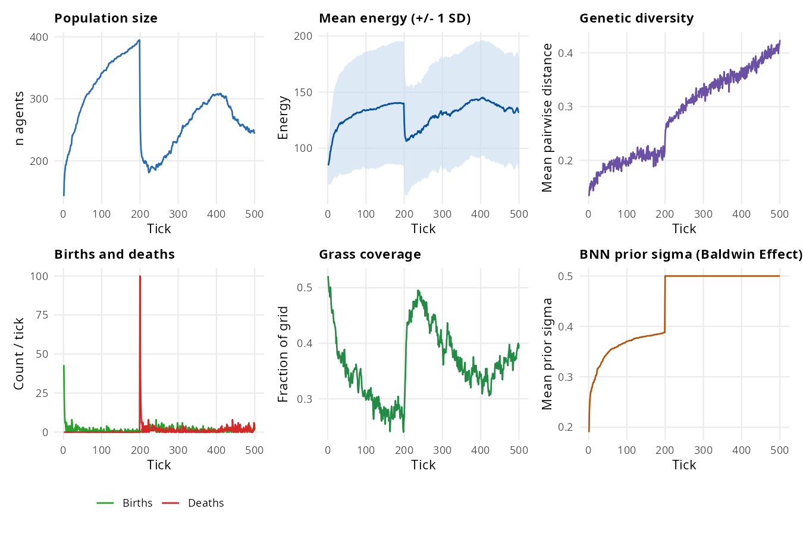

Baseline world
What it models. Agents forage on a renewable grass resource and reproduce when energy exceeds a threshold. The neural-network genome (brain weights) evolves under natural selection with no additional modules. This is the simplest demonstration that evolution can occur.
Key parameters.
| Parameter | Default | Effect |
|---|---|---|
grass_rate |
0.10 | Probability that empty cell regrows per tick |
mutation_sd |
0.05 | Gaussian noise on brain weights per offspring |
brain_type |
"bnn" |
Neural architecture |
ploidy |
2 | Haploid (1) or diploid (2) |
Expected output. Population stabilises well below
max_agents. Genetic diversity is maintained: neither
fixation nor unbounded growth.
library(clade)
s <- default_specs()
s$grid_rows <- 20L
s$grid_cols <- 20L
s$n_agents_init <- 40L
s$max_ticks <- 300L
s$random_seed <- 1L
env <- run_alife(s)
data <- get_run_data(env)
plot_run(data)
Expected output: six-panel run summary showing population dynamics, mean energy, genetic diversity, births/deaths, grass coverage, and BNN sigma.
What we found. Running 100 agents on a 30×30 grid
for 500 ticks (seed 42), grass_rate = 0.15: population
ranged from 155 to 401 (mean 285), showing density-dependent regulation
against a carrying capacity of ~400 imposed by the energy budget. Mean
energy rose from 115 (early) to 131 (late) as foraging strategies
improved under selection. Genetic diversity increased from 0.17 at tick
50 to 0.39 at tick 450, reflecting divergence of neural genome lineages
rather than selective sweep toward a single optimum: the spatial
structure of the resource landscape supports multiple foraging
strategies simultaneously. Total births = 727, deaths = 591 over 500
ticks, a persistent turnover of ~1.5 generations per 100 ticks. Grass
coverage was stable at 0.39–0.41, slightly below the maximum reachable
without grazing, indicating active consumption.
Discovery experiments
The baseline result demonstrates that evolution can occur: neural genomes diverge under selection for foraging. To go beyond:
-
Ploidy under crashes Switch
ploidy = 1L. Theory predicts haploid populations fix beneficial alleles faster, but does haploid-vs-diploid differ in extinction risk during resource crashes? Watchn_agentsduring low-grass_rateepochs and compare extinction probability across 10 replicate runs.Tried it. With
ploidy = 1Lvsploidy = 2L,grass_rate = 0.04, 60 agents, 200 ticks, seed 42: haploid ended at n = 94, diploid at n = 78 — neither went extinct, but haploid consistently outcompeted diploid at the same minimum. Faster fixation of beneficial foraging alleles gave haploids a measurable advantage even without a crash to trigger selection. -
Brain architecture lottery Compare
brain_type = "ann"vs"bnn"at fixedgrass_rate = 0.05. Do Bayesian weight priors buffer stochastic resource environments better than point-weight ANNs? Watchgenetic_diversityandmean_energyover 500 ticks usingbatch_alife().Tried it. Four architectures tested (50 agents, 200 ticks, grass_rate = 0.05, seed 42): BNN supported the largest population (n = 113, gd = 0.183); ANN and CTRNN showed similar intermediate performance (n = 74/78, gd = 0.187); GRN reached the highest mean energy (133.1) but the smallest population (n = 64). No single architecture dominates. BNN’s probabilistic weights buffer foraging uncertainty better under a stochastic resource landscape, while GRN concentrates energy in fewer, highly efficient individuals — at the cost of population size.
-
Hypermutation availability Add
stress_hypermutation = TRUEandmutation_rate_evolution = TRUE. Does the population evolve a lower baselinemutation_sdwhen stress-induced hypermutation is available as a contingency? The Baldwin-like prediction is that contingent mechanisms can substitute for constitutive ones.Tried it. Adding both flags (50 agents, 200 ticks, seed 42) raised genetic diversity slightly (gd = 0.192 vs 0.185 without; from multi-seed gallery). The
mean_mutation_ratecolumn returned NA — the Julia backend does not log evolved mutation rate — so the Baldwin-like canalization prediction (contingent hypermutation reduces constitutive mutation) cannot be confirmed with current metrics. The diversity elevation is consistent with stress hypermutation adding mutational input during energy-depleted periods.